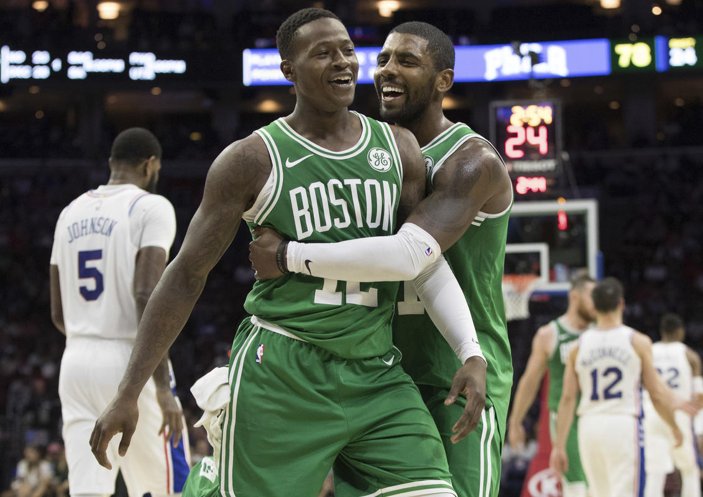

Les joueurs de Brad Stevens n’auraient pas dû gagner contre les Raptors. D’abord parce qu’ils étaient privés de leurs deux plus gros salaires (Kyrie Irving souffre d'une fracture mineure au visage, Gordon Hayward est indisponible pour la saison) au moment d’affronter l’une des meilleures équipes de la Conférence Est. Ensuite parce que, sans leur meneur All-Star, ils étaient incapables de mettre un panier. Seulement 40% de réussite. 33% en première mi-temps. Malgré ça, ils ne comptaient que cinq petits points de retard à la pause (44-49).
Sans Irving, un excellent Al Horford (21 pts à 8/9 aux tirs), Jaylen Brown (18 pts) et Terry Rozier (16 pts) ont su élever leur niveau de jeu dans les moments clés. Boston a finalement renversé la vapeur pour l’emporter sur le fil. C’est déjà la douzième victoire de rang pour une franchise qui n’a plus perdu depuis le 18 octobre dernier. Les Celtics se rendent mardi à Brooklyn pour essayer d’aller chercher un treizième succès de suite.

Source: bostonherald
La contre-performance : DeMar DeRozan ne sait pas faire gagner
Si Boston l’a emporté cette nuit, c’est aussi parce que la superstar de Toronto a manqué non pas une, mais deux balles de match. Déjà réputé pour s’effondrer en playoffs, DeRozan a raté les deux tirs les plus importants de la partie. D’abord à 19 secondes de la sirène. Le rookie Jayson Tatum, auteur d’une faute offensive après avoir capté le rebond, lui a offert une seconde chance. Sans succès.
"C'est un tir qu’il met probablement neuf fois sur dix” (Jaylen Brown, à propos de la dernière action)"
DeRozan a effectivement eu deux gros clients face à lui sur ces deux possessions : Horford puis Brown. Deux des meilleurs défenseurs de la meilleure défense NBA.
La renaissance : Al Horford est le Benjamin Button de la NBA
Il prend de l’âge mais il paraît de plus en plus jeune. Al Horford (31 ans) est comme Benjamin Button, le personnage interprété par Brad Pitt dans le film du même nom. Il a beau avoir pris quelques années (7) depuis sa première sélection au All-Star Game (2010), l’intérieur dominicain est plus fort et plus pimpant qu’il ne l’a jamais été. Il a perdu du poids et semble plus mobile que dans sa jeunesse. "On dirait vraiment qu’il est une version plus jeune de lui-même", remarquait Jaylen Brown dimanche. "Il va au panier, il dunke sur des gars… il ne tient pas ses genoux. Il joue comme un jeune homme", ajoutait Terry Rozier.
Ses jeunes coéquipiers, qui ont parfois dix à douze ans de moins que lui, peuvent le taquiner. Mais ils sont tous en admiration devant le niveau de jeu affiché par l’ancien patron des Hawks depuis le début de la saison. Effectivement, Horford joue avec une fraîcheur très intéressante pour les Celtics. Il est rapide balle en main. Vif sur ses appuis quand il s’agit de défendre. Et il n’hésite pas à prendre le match à son compte quand son équipe en a besoin. Après un mois de compétition, il compile plus de 15 points à 55% aux tirs, 48% à trois points mais aussi presque 9 rebonds et 5 passes. Un facteur très important de la série incroyable des Celtics.
Source: Voir l'original